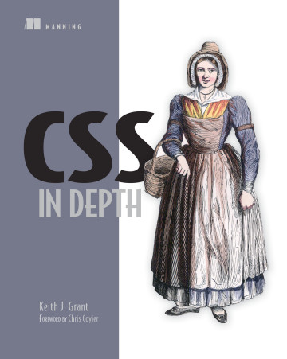

JavaScript学习

学习成果：
- 三遍阅读
- 22章代码手写进IDE并调试分析
- 80000+字中文注释
-
JavaScript + Browser + Node
丰富的前端基础
一、学习背景
《Eloquent JavaScript》是木犀团队大一新人培养指定阅读的js语言学习书籍，作为一本很优秀全英文的介绍JavaScript的书籍，覆盖了JavaScript语言特性、浏览器与Node三个大模块。
由于我稍晚在大二加入木犀，学习JavaScript的时间很紧张，但对这本书有很大的兴趣，因为没学JavaScript之前的我只能以编程课的基础，写一些简单的JavaScript变量定义，循环结构，定义函数等基本操作，但对JavaScript高级特性不太理解只能查博客写代码，经常出错，想打破迷糊不清的现状，决心读完这本书，跟着作者Marijn Haverbeke的视角透透彻彻的学习JavaScript。
由于我稍晚在大二加入木犀，学习JavaScript的时间很紧张，但对这本书有很大的兴趣，因为没学JavaScript之前的我只能以编程课的基础，写一些简单的JavaScript变量定义，循环结构，定义函数等基本操作，但对JavaScript高级特性不太理解只能查博客写代码，经常出错，想打破迷糊不清的现状，决心读完这本书，跟着作者Marijn Haverbeke的视角透透彻彻的学习JavaScript。
二、学习任务
《Eloquent JavaScript》共21章，分成三大部分，
- 前12章讲解JavaScript（由浅入深的JavaScript知识）
- 中7章讲解浏览器（js在html、http配合使用）
- 后2章讲解Node（基础的Node.js服务器与npm介绍）
三、学习行动
共阅读三遍：
第一遍：前端组组长的要求下学习，因为是全英文，难度大，虽然有热情看着示例代码运行，对的高阶JavaScript函数、数组、对象理解了一遍，感觉书上的内容看过一遍，几天后就不能记得，整本书过完一遍松散，不能转换成自己理解，效果差，是初印象。
第二遍：已经参与项目开发开始写，第一JavaScript遍不能理解吸收，决定重读，这次用WebStorm全部手写书籍代码的，用动手方式来留下自己的笔记理解，这一遍难度最大，抄写22章上千行的代码和例子，但对js的新特性学习感觉很兴奋，长达四个多月的坚持阅读后读完一遍，比第一遍深入理解了很多知识。写代码发现自己预想不一样，看控制台调试分析，真正吸收学习JavaScript与相关技术。
第三遍：前两遍的基础上已经有较深刻的理解，但觉得单纯代码不能概括书本中作者的思想或某个知识的细节。决心应用Chrome浏览器的diigo插件，在22章的全英文写上自己的理解注释，写注释发现许多似是而非的概念，归纳总结书中知识，结合中文注释帮助复习回忆。
第一遍：前端组组长的要求下学习，因为是全英文，难度大，虽然有热情看着示例代码运行，对的高阶JavaScript函数、数组、对象理解了一遍，感觉书上的内容看过一遍，几天后就不能记得，整本书过完一遍松散，不能转换成自己理解，效果差，是初印象。
第二遍：已经参与项目开发开始写，第一JavaScript遍不能理解吸收，决定重读，这次用WebStorm全部手写书籍代码的，用动手方式来留下自己的笔记理解，这一遍难度最大，抄写22章上千行的代码和例子，但对js的新特性学习感觉很兴奋，长达四个多月的坚持阅读后读完一遍，比第一遍深入理解了很多知识。写代码发现自己预想不一样，看控制台调试分析，真正吸收学习JavaScript与相关技术。
第三遍：前两遍的基础上已经有较深刻的理解，但觉得单纯代码不能概括书本中作者的思想或某个知识的细节。决心应用Chrome浏览器的diigo插件，在22章的全英文写上自己的理解注释，写注释发现许多似是而非的概念，归纳总结书中知识，结合中文注释帮助复习回忆。
四、学习结果
《Eloquent JavaScript》学习过程确实是一波三折的，期间有困难与庞大的篇幅，但最终还是带着浓厚的兴趣与热情读完了全书，并且是能作出自己的笔记与理解，并非走马观花看过则忘，收获：
- 系统学习JavaScript语法特性
- 对js多个部分深刻留下印象，能结合注释迅速回忆理解
- 规范书写JavaScript代码能力
- 积累较扎实JavaScript基础
- 计划深入学习《Professional JavaScript for Web Developers》和《You Don't Know JS》等书，通过学习努力掌握JavaScript这门语言。
CSS学习

网站地址：https://www.manning.com/books/css-in-depth
代码笔记仓库：https://github.com/Ekko306/css-in-depth
学习成果：
- 跟随书籍手写代码理解阅读
- 473页原版英文阅读，1200+条笔记
- 系统学习、深入理解CSS，打破前端css全靠网络博客桎梏
一、学习背景
在基本学习完JavaScript之后，实际参与开发项目，面对CSS很困惑，因为没有系统学习过，开始只能block、inline-block布局写页面，但经常遇见问题，比如有的样式不能用（CSS优先级），有的margin属性不能用（collapsed margins），有的z-index不能用（stacking context）。
此时的我面对css都是，"摸索"的写法，错了直接到百度搜，搜出来一堆良莠不齐的博客，然后看一看中文理解，就抄写上改正方法，但对底层背后的原因一概不知，还有许多css属性难以理解，感觉自己css模块欠缺很多，并且"摸索"的方式肯定是错误的，于是找学长建议想通过《CSS In Depth》系统学习css。
此时的我面对css都是，"摸索"的写法，错了直接到百度搜，搜出来一堆良莠不齐的博客，然后看一看中文理解，就抄写上改正方法，但对底层背后的原因一概不知，还有许多css属性难以理解，感觉自己css模块欠缺很多，并且"摸索"的方式肯定是错误的，于是找学长建议想通过《CSS In Depth》系统学习css。
二、学习任务
《CSS In Depth》共16章，分成四大模块
- Part 1 Reviewing the fundamentals 复习基础
- Part 2 Mastering layout 掌握布局
- Part 3 CSS in scale 偏理论css模块化概念
- Part 4 Advanced topics 更关注UI设计高阶概念
三、学习行动
全书共有473页全英文，但基于JavaScript的学习经验，已经不再惧怕英文阅读，相反还养成了英文阅读的习惯，并且许多英文问题的解答都比中文资料丰富准确，面对英文一点点体会学习。
在长达6个月开始坚持学习全书，采用WebStorm手抄代码浏览器运行理解+iPad的MarginNote 3总结思维脑图的形式。对于每个知识点在脑图总结理解与认识，方便复习迅速回忆理解。
在长达6个月开始坚持学习全书，采用WebStorm手抄代码浏览器运行理解+iPad的MarginNote 3总结思维脑图的形式。对于每个知识点在脑图总结理解与认识，方便复习迅速回忆理解。
四、学习结果
《CSS In Depth》中说css是一门模糊具有难度的语言，它一半有关设计，一半有关技术，但是系统学习css之后会让自己的前端开发获得本质提升。本在线简历网站许多css布局就通过本书学习应用搭建。收获：
- 系统学习CSS特性
- 对基础样式、布局、动画具有深刻理解
- 解决CSS问题寻根溯源能力
- 作为参考笔记帮助团队新人学习
- 积累较扎实css基础